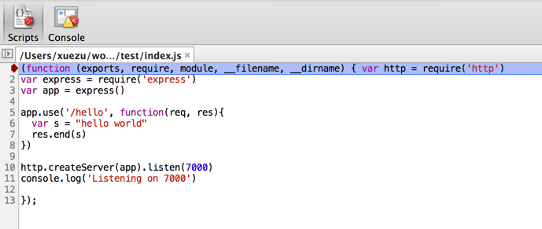
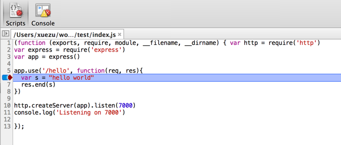

So..What is Lego
It devides a page into pieces
And..it is implemented by the back end,not the front end
How?
What does #mosaic mean?
Uh..you may get confused.
Let me explain...
Let me explain...
We call it a "Component"

How it works?
KISSY, Brix
=>
JSON
=>
dataApi
====> Awsome!
====> Awsome!
Some problems
Some problems
Discussion:
1、Page memory
2、Resource manage
1、Page memory
2、Resource manage
It is a node.js app that is used to deal with the published components.
When a client starts to publish a component, the package will be gzipped and sent to the server via Http-Post.
The server will do the following staffs when receiving a request:
1、Ungzip the files
2、Concat and minify js and css files for deploying
3、Upload to CDN
4、Update local repository
Every step is a promise
1、Ungzip the files
2、Concat and minify js and css files for deploying
3、Upload to CDN
4、Update local repository
Every step is a promise
Well..time to explain
If concurrent requests arrive, only one can be resolved. Others will be rejected.
That's not pretty!
Concurrency is not a problem for node.js since its nature of evented IO
However, the tasks in our project need to execute sequence by sequence to some point, such as uploading to CDN
So, we need to analyze each step of a task to study the possibility of concurrency and also find out which one is time-consuming
Discusstion
Node-inspector is a tool which allows debuging node.js apps in browser
It's convinient and simple
First of all, install globally:
npm install node-inspector --global
Assume that i have a simple app.js:
var http = require('http')
var express = require('express')
var app = express()
app.use('/hello', function(req, res){
var s = "hello world"
res.end(s)
})
http.createServer(app).listen(7000)
Then take following steps:
1、cd path/of/app
2、node --debug-brk app.js
After that, the terminal shows "debugger listening on port 5858"
Open a new terminal and run:
node-inspector
It will tell you to visit http://0.0.0.0:8888/debug?port=5858 to start debugging which means success
Open the link in a tab of chrome:

It stops at the first line, set breaks and click to skip(press F8 in windows)
Then open a new tab and link your app page (http://localhost:7000/hello in this example)
Well..it works!

Thank you